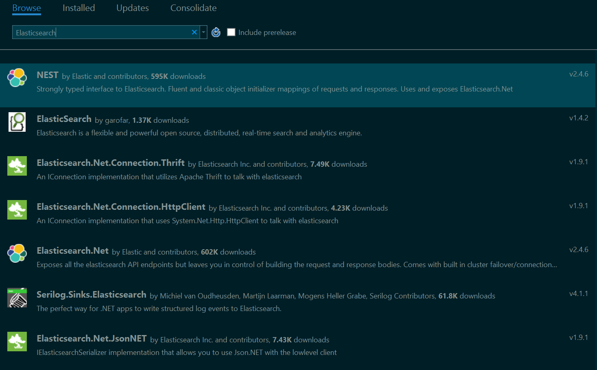
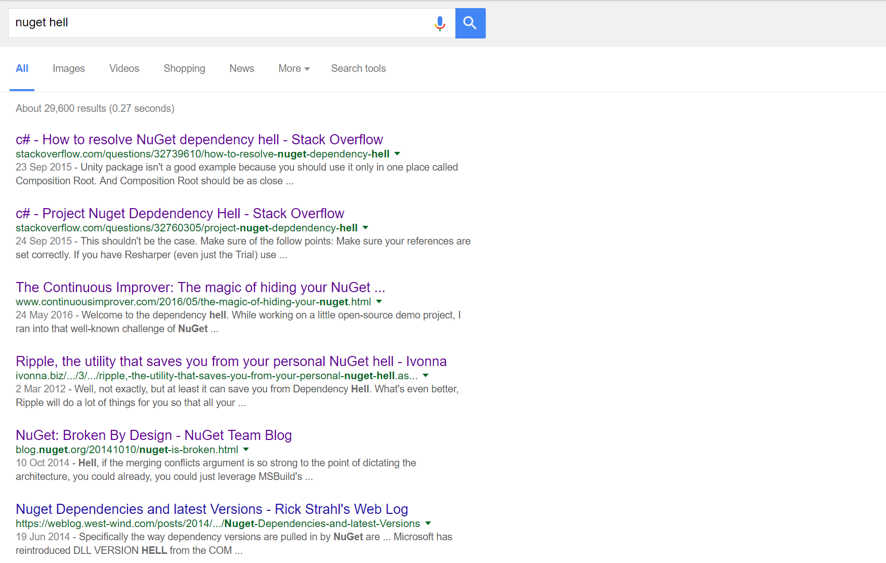

Fake it to Make it
Dependency Management and Build Automation
with Paket and Fake
Russ Cam @forloop
About me
- Software Engineer at

-
Interested in
- Distributed systems
- Cloud computing
- Message-driven architectures
- Software Design, Patterns and Practices
- Say Hi!
In the days before NuGet
~/libs directory
NuGet made referencing a breeze
NuGet Hell is the new DLL Hell
Paket
Dependency Manager for .NET and Mono
..designed to work well with NuGet packages and also enables referencing files directly from Git repositories or any HTTP resource. It enables precise and predictable control over what packages the projects within your application reference.
Main Components
- paket.exe
- paket.dependencies
- paket.lock
- paket.references
paket.exe
in ~/.paket directory in root
.paket\paket.exe --help
add <options> Adds a new package to your paket.dependencies file
find-refs <options> Finds all project files with package installed
init <options> Creates an empty paket.dependencies in working directory
install <options> Download the dependencies in paket.dependencies or paket.lock
outdated <options> Lists all dependencies that have newer versions available
remove <options> Removes package from paket.dependencies and paket.references
restore <options> Download the dependencies in paket.lock
update <options> Update one or all dependencies
paket.dependencies
In solution root
source https://www.nuget.org/api/v2
nuget Newtonsoft.Json
source https://api.nuget.org/v3/index.json
nuget AsciiDocNet
group build
source https://www.nuget.org/api/v2
nuget FAKE
nuget FSharp.Data
nuget GitLink prerelease
source https://www.myget.org/F/xunit/
nuget xunit.runner.console 2.2.0-beta3-build3330
paket.lock
Generated from paket install
NUGET
remote: https://www.nuget.org/api/v2
AsciiDocNet (1.0.0-alpha3)
Bogus (7.1.6)
NETStandard.Library (>= 1.6) - framework: >= netstandard13
Newtonsoft.Json (>= 9.0.1) - framework: >= net40, >= netstandard13
System.Linq (>= 4.1) - framework: >= netstandard13
System.Linq.Expressions (>= 4.1) - framework: >= netstandard13
System.Reflection (>= 4.1) - framework: >= netstandard13
System.Reflection.TypeExtensions (>= 4.1) - framework: >= netstandard13
CsQuery (1.3.4)
DiffPlex (1.2.1)
FluentAssertions (4.13)
NETStandard.Library (>= 1.6) - framework: >= netstandard13
System.Reflection.TypeExtensions (>= 4.1) - framework: >= netstandard13
paket.references
In each project
FluentAssertions
Newtonsoft.Json
xunit
xunit.abstractions
System.Reactive
Bogus
DiffPlex
SemanticVersioning
Why Paket?
Predictable control over references
with NuGet
<?xml version="1.0" encoding="utf-8"?>
<packages>
<package id="Elasticsearch.Net" version="1.9.0" targetFramework="net40" />
<package id="GeoAPI" version="1.7.4" targetFramework="net40" />
<package id="NEST" version="1.9.0" targetFramework="net40" />
<package id="NetTopologySuite" version="1.14" targetFramework="net40" />
<package id="NetTopologySuite.IO.GeoJSON" version="1.14" targetFramework="net40" />
<package id="Newtonsoft.Json" version="9.0.1" targetFramework="net40" />
</packages>
with Paket
NEST
NetTopologySuite.IO.GeoJSON
Reference multiple sources
- Own NuGet server
- Any HTTP resource
Multiple versions
Same dependency
source https://www.nuget.org/api/v2
nuget Newtonsoft.Json
group legacy
source https://www.nuget.org/api/v2
nuget Newtonsoft.Json 6.0.0
Different framework versions
<Choose>
<When Condition="$(TargetFrameworkIdentifier) == '.NETFramework' And ($(TargetFrameworkVersion) == 'v2.0' Or $(TargetFrameworkVersion) == 'v3.0')">
<ItemGroup>
<Reference Include="Newtonsoft.Json">
<HintPath>..\..\packages\Newtonsoft.Json\lib\net20\Newtonsoft.Json.dll</HintPath>
<Private>True</Private>
<Paket>True</Paket>
</Reference>
</ItemGroup>
</When>
<When Condition="$(TargetFrameworkIdentifier) == '.NETFramework' And $(TargetFrameworkVersion) == 'v3.5'">
<ItemGroup>
<Reference Include="Newtonsoft.Json">
<HintPath>..\..\packages\Newtonsoft.Json\lib\net35\Newtonsoft.Json.dll</HintPath>
<Private>True</Private>
<Paket>True</Paket>
</Reference>
</ItemGroup>
</When>
</Choose>
Flagging Delisted packages
let leftpad s n c =
let l = s |> String.length
let c' = match c with
| None -> "."
| Some v -> v
match l <= n with
| true -> String.replicate (n-l) c' + s
| false -> s
"The owner of LeftPad 1.0.0-alpha1 has unlisted the package. This could mean that the package version is deprecated or shouldn't be used anymore."
A global view of your dependencies
What is used where and by whom?
paket.exe why nuget [id]
.paket\paket.exe why nuget Newtonsoft.Json
Paket version 3.30.2
NuGet Newtonsoft.Json is a direct (paket.dependencies) dependency.
It's a part of following dependency chains:
-> Bogus
-> Newtonsoft.Json
Package Dependency Resolution
"Select the latest version for each of the packages in the paket.dependencies file, plus all their transitive dependencies, such that all version constraints are satisfied."
- Constraint Satisfaction Problem
- Breadth First
- Sorting Package Requirements
- High Conflict First
- Package Conflict Boost
Converting from NuGet to Paket
1. Create .paket dir
mkdir .paket
cd .paket
2. Download paket.bootstrapper.exe
$output = "paket.bootstrapper.exe"
$latestRelease = iwr "https://github.com/fsprojects/Paket/releases/latest"
$baseUri = $latestRelease.BaseResponse.ResponseUri.AbsoluteUri
$uri = "$baseUri/$output"
iwr -Uri $uri -OutFile $output
3. Run the bootstrapper
.paket\paket.bootstrapper.exe
4. Convert nuget dependencies
.paket\paket.exe convert-from-nuget
5. Simplify dependencies
.paket\paket.exe simplify
6. Profit!

FAKE - F# Make
Build automation for .NET
... is a build automation system with capabilities which are similar to make and rake. It is using an easy domain-specific language (DSL) so that you can start using it without learning F#.
Main Concepts
- Fake.exe
- Targets
- FileSets
- *Helpers
Install with Paket!
1. Include in paket.dependencies
group build
source https://www.nuget.org/api/v2
nuget FAKE
2. install package
.paket\paket.exe install
3. set up F# project
4. Reference FAKE in F# script
#r "build/FAKE/tools/FakeLib.dll"
open Fake
Define targets
#r "build/FAKE/tools/FakeLib.dll"
open Fake
Target "Test" <| fun _ ->
trace "Testing stuff..."
Target "Build" <| fun _ ->
trace "Building stuff..."
// define the dependencies
"Test"
==> "Build"
RunTargetOrDefault "Build"
Set up a batch script in root
@echo off
REM build <target>
.paket\paket.bootstrapper.exe
if errorlevel 1 (
exit /b %errorlevel%
)
.paket\paket.exe restore
if errorlevel 1 (
exit /b %errorlevel%
)
SET TARGET="build"
SET SCRIPT="build\\scripts\\Targets.fsx"
IF NOT [%1]==[] (set TARGET="%1")
ECHO starting build using target=%TARGET%
"packages\build\FAKE\tools\Fake.exe" "%SCRIPT%" "target=%TARGET%"
Include / Exclude files
#r "tools/FAKE/FakeLib.dll"
open Fake
let buildDir = "./build/"
let appReferences =
!! "src/app/**/*.csproj"
++ "src/app/**/and-this.fsproj"
-- "src/app/**/but-not-this.csproj"
Target "BuildApp" (fun _ ->
MSBuildRelease buildDir "Build" appReferences
|> Log "AppBuild-Output: "
)
Heaps of *Helpers!
- FileSystem / Environment
- MSBuild.exe / dotnet.exe
- NUnit / xUnit / SpecFlow
- Integrations
- Slack
- TeamCity
- Azure Emulator